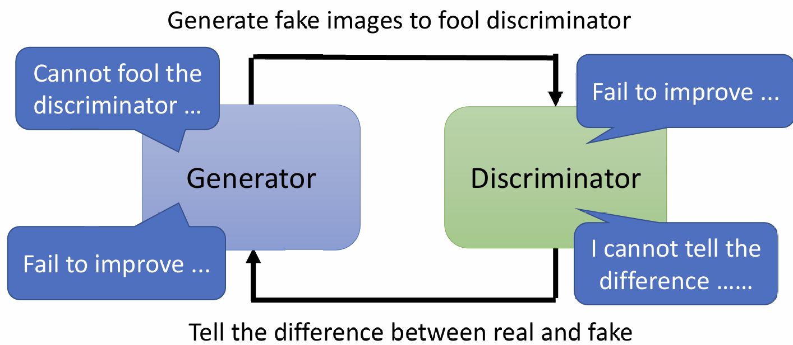

Generative的Model需要input一个x，同时再从某个distribution中sample一个z，将其一同送入Model，最终产生output。
由于sample出的z不同，导致相同的input可能会产生不同的output，这就是Generation一个最大的特点——机器具有创造力。
比如AI绘画，给定一些特征，每次产生的图片都不相同，这就是Generation的作用。
GAN
在Generative Model中，其中一个知名的是Generative Adversarial Network（GAN）。有各种各样GAN的变形会在前面加上其他英文字母，例如BGAN、CGAN、SGAN…
Unconditional generation
unconditional generation就是直接用一个Distribution sample出来的z作为input产生output，例如动漫头像生成器。
GAN可以分为generator和discriminator。
Generator输入的z是一般是一个Low-dim vector（通常50、100dim这种的），而output是一个high-dim vector，例如一张图片，其dimention可以是3×256×256。
Discriminator本质上就是一个neural network，它接收Generator输出的东西，输出一个数字，其值代表Generator生成结果的好坏。
以动漫头像生成举例，Generator接收一个随机sample的vector，然后产生一张图片，Discriminator接收这个图片，然后产生一个值，用来判断这张图片是不是生成的。
Generator和Discriminator的关系像是自然界中的捕食者和被捕食者，Generator试图去迷惑Discriminator，而Discriminator试图去拆穿Generator产生的东西，两者在不断的进化（训练）中共同进步，这就是Adversarial的由来。
Algorithm
首先初始化二者的parameters，在之后的每次迭代中：
step 1：
固定Generator的parameters，然后用真正的东西（即train data）和Generator产生的东西去训练Discriminator，让其能有效拆穿Generator；
step 2：
固定Discriminator的parameters，然后训练Generator让他努力去欺骗Discriminator。具体欺骗方法为：让Generator产生一个结果，放入Discriminator，训练Generator使其产生的结果在Discriminator中获得高分（更像真实的而非生成的）
如果将二者视作一个大的network：
训练GAN的步骤和训练其他network的步骤是没有什么差异的，同样都是使用Loss，然后Gradient Descend之类的Optimization。
一个生成动漫头像非常好的Model：《Making Anime Faces With StyleGAN》
Theory behind GAN
实际上我们要做的是：使GAN生成的output的distribution和实际事物（即train data）的distribution尽可能接近。
那么如何衡量两个Distribution的相似度？使用divergence。divergence越小表示两个distribution越接近。因此我们的目的可以表示为：
但真正的问题是如何计算divergence，使用一些常见的divergence用于GAN，其计算过于复杂无法实现。
在GAN中使用了一种做法，只要知道如何从$P_G$和$P_{data}$sample出东西来，而不需要知道其具体的formulation，就能计算divergence。
如何smaple？从train data中直接sample就可以得到$P_{data}$，从Generator的结果中sample出一些vector，即可得到$P_G$。
总结一句话就是说，我们不需要知道$P_G$和$P_{data}$具体的formulation，只需要sample一些东西就能计算divergence。
这需要依靠Discriminator。我们要训练一个Discriminator，使其看到real data就给出一个较高的分数，而看到一个Generative data就给出一个较低的分数。因此我们要得到：
其中$V(D,G)$就是Discriminator的Objective Function：
意思就是如果有一些y是从real data里产生的，那么就取$logD(y)$；如果有一些y是从generative data里产生的，那么就取$1-logD(y)$。
这样做的理由也很明显，要想maximum V，那么一个data如果是real的，那么通过Discriminator得到的分数越大越好，如果是generative的，那么分数就越小越好。
[scode type=”share”]minimize的function叫Loss function
maximum的function叫objective function[/scode]
[scode type=”blue”]为什么要这样定义objective function呢？
这个objective就是负的cross-entropy。其实Discriminator的工作像是一个classifier，将real当作class 1，将generative当作class 2，由于classifier的loss function是cross entropy，为了将Discriminator和classifier挂上钩，因此就定义为了负的cross entropy[/scode]
然而，人们发现maximum objective value和JS Divergence是有关的。推导过程：《Generative Adversarial Networks》。虽然不知道怎么算Divergence，但是我们可以算objective function来间接去优化Divergence。
[scode type=”blue”]一种直观的理解：假如$P_G$和$P_{data}$很像，那么divergence就会很小，那么就说明很难区分，此时classifier的表现就不那么好，因此会得到一个很大的cross-entorpy，就会有一个很小$\mathop{\arg\max}\limits_DV(D,G)$。反之同理。[/scode]
原目标为$G^*=\mathop{\arg\min}\limits_GDiv(P_G,P_{data})$因此我们就可以用$\mathop{\arg\max}\limits_DV(D,G)$去替换divergence了：
甚至可以设计不同的objective function去估计不同的divergence：《f-GAN: Training Generative Neural Samplers using Variational Divergence Minimization》
即便这样，GAN仍旧很难train——No pain,no GAN.
Tips for GAN——WGAN
使用JS divergence会遇到这样一个问题：假设要生成一张3x256x256的动漫头像，那么有3x256x256个feature，这是一个很高维度的distribution，而真正的动漫头像$P_{data}$可能只是这个高维空间中的一个低维manifold，好比二维平面中的一条线，generative的结果$P_{G}$也是这样的一个manifold。这就会导致两个distribution的overlap的部分基本能忽略为0

或者说，尽管实际上这两个distribution确实有重叠的部分，但是sample的不够好的话，还是会导致估测这两个distribution没有overlap。
两个distribution如果没有overlap的话，那么它们的JS divergence恒为log2。因此，就算两个distribution要比另一对更加接近，使用JS divergence得到的都是一样的结果，因为这两个distribution基本不会overlap。这也就是说，model不知道怎样train，就算distribution更加接近了，model也不知道。使用binary classifier的话，正确率很容易达到100%，那么loss提供不了任何信息，根本不知道model有没有越来越好。
我们可以使用Wasserstein Distance代替JS divergence。
想象两个distribution时两堆土，有一个推土机要将一堆土推到另一堆，移动其中一个distribution的平均距离就Wasserstein Distance。应用Wasserstein Distance的GAN叫做WGAN。
如果是更复杂的distribution，那么搬运的方式会有很多。用最小的搬运平均距离来定义Wasserstein Distance。
这样一来看起来会比较复杂，因为还需要optimization一个搬运距离。
我们假设能够计算，那么此时两个distribution越来越接近的时候（虽然没有overlap），但是仍能看出区别，能说明model有在变好。
那么如何计算？解下面的maximum function就可以得到。
它的条件简单来说就是D需要足够平滑。如果不加以限制的话，那么D会给real data无限大的正值，给generative data无限大的负值。足够平滑可以避免出现这种情况：
最初的WGAN做法是将parameter限制在一个范围内。但这种做法效果不太好，后面提出了改进版，使用Gradient Penalty：《Improved Training of Wasserstein GANs》，还有更加改进的版本：《Spectral Normalization for Generative Adversarial Networks》，叫做SNGAN，这个效果较好。
但GAN还面临很多问题……例如，如果Generator和Discriminator其中一者不再进步，那么整个model都会停止。

一些其他的技巧：
- Tips from Soumith
- 《Unsupervised Representation Learning with Deep Convolutional Generative Adversarial Networks》
- 《Improved Techniques for Training GANs》
- 《Large Scale GAN Training for High Fidelity Natural Image Synthesis》
Conditional Generation
上文提到的generator的input只是一个随机sample的vector，现在我们额外给出一个初始的$x$一起输入，产生output。一个很具体的应用就是根据文字说明生成图片，虽然输入了相同的描述，但是由于随机sample的不同，产生的图片也不同。
如果用完全相同的架构去做Conditional Generation，只是加了一个input，会有一个问题：Discriminator无法判断Generator的output是否和$x$是有关的。因此，我们需要额外设计一个模块需要判断Generator的outpuut是否和$x$匹配。要训练这个模块，我们需要真实资料和标签配对的训练资料，还需要一些真实资料和标签不配对的训练资料，用来告诉Generator这是错误的。
一篇Conditional GAN的paper：《Generative Adversarial Text to Image Synthesis》
图片转换的paper：《Image-to-Image Translation with Conditional Adversarial Networks》。paper有写到：GAN+supervised效果最好。
甚至可以语音转图片：《Towards Audio to Scene Image Synthesis using Generative Adversarial Network》
让机器产生动图：《Few-Shot Adversarial Learning of Realistic Neural Talking Head Models》
use GAN in unsupervised-learning——Cycle GAN
如果完全没有成对匹配的资料（例如影像风格转换，真人转二次元），那么如何使用GAN学习呢？
完全套用前面写到的架构，Generator产生的图片可能和input没有关系。不管你输入什么，产生的就是一个随机的二次元人物，但和输入的真人没有什么特别的关系。
解决方法为：假设真人图片属于$x domain$，二次元图片输入$y domain$我们设置两个Generator，第一个Generator会将$x domain$转化为$y domain$，第二个Generator会将$y domain$转化为$x domain$，只要比较input的$x domain$的vector和最后产生的$x domain$的vector，其越接近越好。这组成了一个循环，因此叫Cycle GAN。
这样做能够使得input和generative的结果有一定的关系。但我们无法保证这个关系是我们想要的（比如眼镜会变成一个痣），实际操作的时候，机器是非常懒惰的，它大概率不会去做一些奇怪的转换，也就是说，它更倾向于不去改变眼镜的样子，眼镜还是眼镜，所以这个问题不需要太担心。
一些其他的类似的GAN：
- 《Learning to Discover Cross-Domain Relations with Generative Adversarial Networks》
- 《DualGAN: Unsupervised Dual Learning for Image-to-Image Translation》
- 《Unpaired Image-to-Image Translation using Cycle-Consistent Adversarial Networks》
- 《StarGAN: Unified Generative Adversarial Networks for Multi-Domain Image-to-Image Translation》
- 《U-GAT-IT: Unsupervised Generative Attentional Networks with Adaptive Layer-Instance Normalization for Image-to-Image Translation》，其网站selfie2anime
另外，还可以做文字转换（例如将坏话转换成好话）
Evaluation of Generation
仅凭人的直觉来判断结果的好坏显然是不合理的。一种方法是：设置一个影像分类系统，输入GAN产生的图片，然后输出一个概率分布，这个概率分布越集中越好。直观理解就是，影响辨识系统很确定这张图片是什么，说明结果很好。
但用这种方法，会遇到Model collapse的问题。简单来说，就是机器只学习到产生一种类似的图片，即大部分图片都是相似的。
还有一个问题：Model Dropping。这种问题表现为：多样性足够，但只学习到了train data中的一部分内容。这个问题很难被侦测到。
那么还有一种方法，在一定程度上可以解决上述问题，判断结果的好坏。将一批图片放到分类器中，得到每个图片的distribution，然后将所有distribution平均。如果结果很集中，代表多样性差；如果结果分布很平均，代表多样性好。可以用Inception Score(IS)表示结果的好坏。
但IS不适用于人脸图片生成，因为即使发色、眼睛不同，但终归都是人脸，因此可能IS判断的多样性也较小。我们可以使用Fréchet Inception Distance (FID)。
我们取出output layer的softmax前的一层输出vector，按理说是一个distribution，然后计算其和train data的distribution的距离，距离越小越好。
《GANs Trained by a Two Time-Scale Update Rule Converge to a Local Nash Equilibrium》
但有些时候，Generator可能只是将train data sample一些出来，或者将train data翻转一下，就又出现了一个问题。这说明，GAN遇到的问题还是非常多的。下面这篇paper介绍了多种评估GAN的方法：《A note on the evaluation of generative models
》
一篇介绍了不同GAN效果对比的paper：《Are GANs Created Equal? A Large-Scale Study》